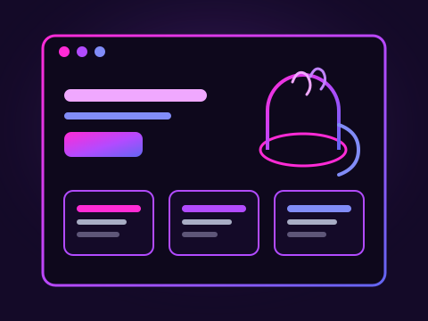
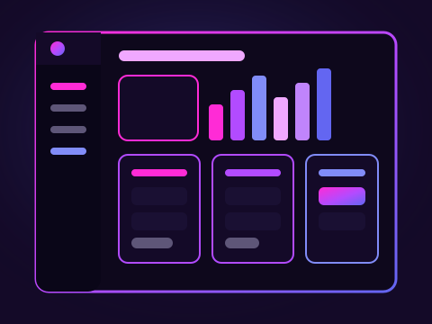
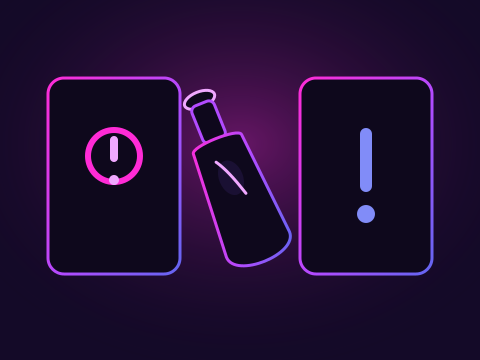
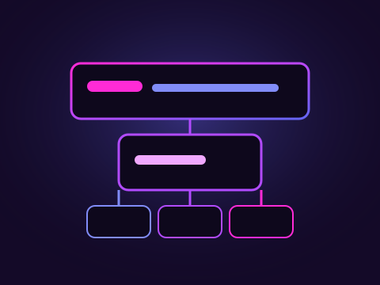
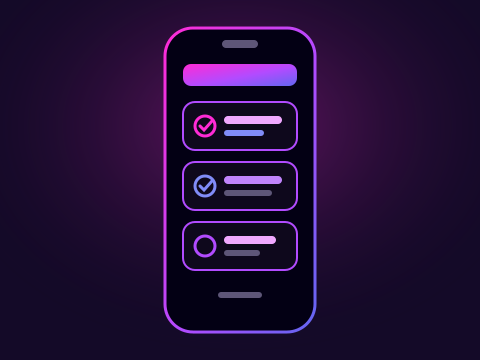

Lillemans webbplats
En webbplats byggd i PHP åt företaget Lilleman, med sidor för information och kontakt.
Öppna Lillemans webbplats på GitHubEtt urval av appar och webbprojekt från min GitHub.

En webbplats byggd i PHP åt företaget Lilleman, med sidor för information och kontakt.
Öppna Lillemans webbplats på GitHub
Ett TypeScript-verktyg för skolarbete, med fokus på struktur och en tydlig översikt.
Öppna Skolverktyg på GitHub
En Truth or Dare-app i TypeScript, med en cinematic landing page i Next.js.
Öppna Truth or Dare på GitHub
Ett serverless boknings-API byggt med AWS Lambda och DynamoDB.
Öppna bookings-api på GitHub
En iOS-app för kioskbeställningar, byggd med SwiftUI, Firebase och MVVM.
Öppna KioskOrders på GitHub